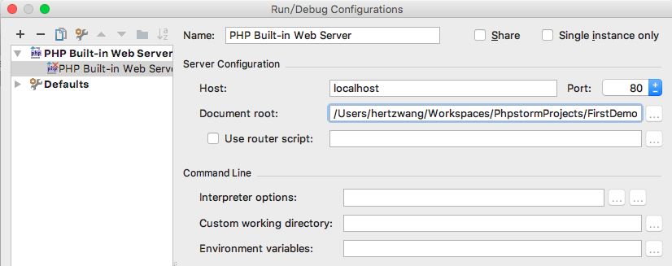

反馈请联系hertz@hertzwang.com,谢谢
前言：本文主要介绍在Mac平台搭建一个PHP API开发环境
环境及工具
操作系统：Mac OS 10.11.6
集成开发环境：PhpStorm 下载
数据库：MySQL Community Server 8.0.0 dmr 下载
数据库建模工具：MySQL Workbench 下载
PHP框架：CodeIgniter 下载
PHP 5.5.38：系统自带的PHP版本
在终端执行
php -v查看PHP版本bogon:~ hertzwang$ php -v PHP 5.5.38 (cli) (built: Aug 21 2016 21:48:49) Copyright (c) 1997-2015 The PHP Group Zend Engine v2.5.0, Copyright (c) 1998-2015 Zend Technologies
PhpStorm 配置
安装并运行PhpStorm
新建项目（FirstDemo）
欢迎界面点击 Create New Project 进入 New Project 界面；
选择 PHP Empty Project
- Location：工程目录，untitled 表示工程名称（可修改），以 FirstDemo 为例
- Development environment
- PHP language level：选择PHP的版本，我这里使用的是系统自带的，故选择 5.6
- CLI Interpreter：选择解释器，这个在下面设置
- 其它略
点击右下角的 Create 创建项目；
点击 工具栏 的 **File –> New… –> PHP File–>*，File Name* 输入 Test 并点击 OK；
编辑 Test.php，添加以下代码：
$output = array('message' => "Request Success"); exit(json_encode($output));
配置运行环境
打开 Configurations ，点击 工具栏 的 **Run –> Edit Configurations…**；
新建 PHP Built-in Web Server ，点击左上角
+并选择 PHP Built-in Web Server；详细设置

- Name：服务名称，输入
PHP Built-in Web Server或其它 - Server Configuration
- Host：主机（访问地址），输入
localhost或其它 - Port：端口号，根据个人情况输入（端口号可能被占用）
- Document root：PHP文档目录，选择 工程目录
- Host：主机（访问地址），输入
- Name：服务名称，输入
添加 CLI Interpreters Fix Error
点击右下角的 Fix ，然后再点击新窗口中 CLI Interpreter 后面的
...按钮点击左上角的
+，选择/usr/bin/php，点击右下角 OK确认设置，点击右下解 OK
测试
运行：点击 工具栏 的 Run –> Run… ，选择 PHP Built-in Web Server 注：由于端口被占用启动失败，故端口改为
8080打开浏览器输入
http://localhost:8080/test.php